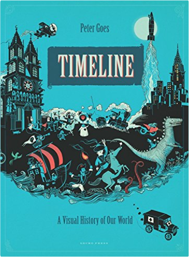
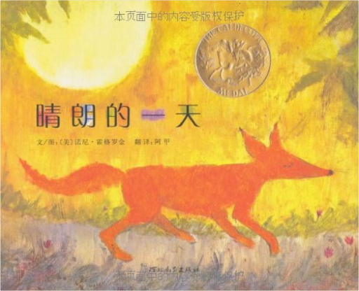
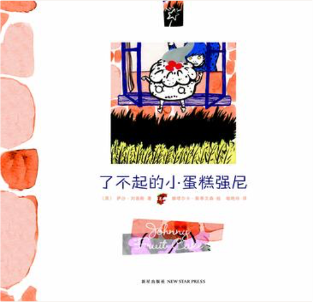
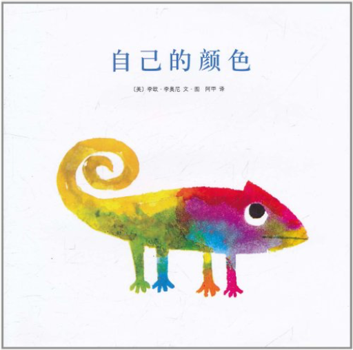
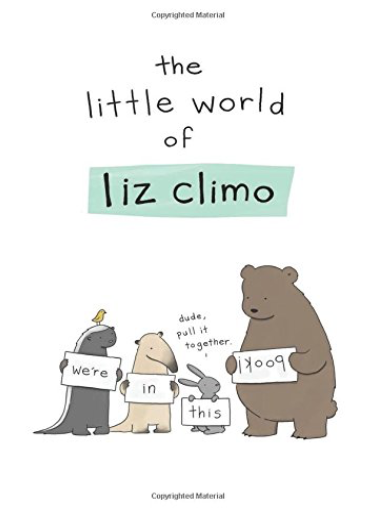
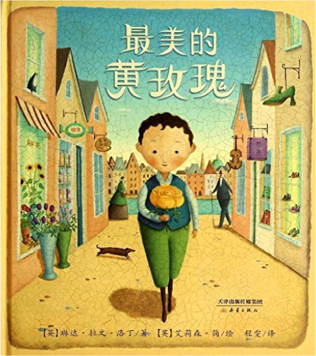

 TimelinePeter Goes  From the Big Bang to the present day, illustrated scenes tell the history of our planet in one continuous story in a beautiful large-format hardback for young and old.  晴朗的一天诺尼•霍格罗金(Nonny Hogrogian) 《晴朗的一天》是一则古老的亚美尼亚民间故事，特别适合孩子大声朗读。一只调皮的狐狸无意间偷喝了一位老婆婆的牛奶，被恼羞成怒的老婆婆剪下了尾巴，要他用牛奶来交换，可是想得到牛奶并不那么容易，狐狸接下去都经历了什么事情呢？ 爱丽丝梦游仙境刘易斯·卡罗尔 (Carroll L.) 温馨提示：两种封面随机发货  时差绘本•童话:了不起的小蛋糕强尼萨沙•刘易斯 (Sasha Lewis) 《了不起的小蛋糕强尼》的故事源自英格兰一个古老童话，由英国著名童话作家约瑟夫•雅各布斯于1890年创作，讲述了一个自大的蛋糕小人最终被狐狸用计吃掉的农庄故事。乡村生活是最典型的英国文化，小蛋糕强尼是一个有点自以为是的聪明小子，在跑过了农庄和黑森林中的许多动物之后，最后被狐狸用计吃掉了。一系列英国传统经典童话里的乡村动物，以及英式幽默将会在故事里出现。  自己的颜色李欧·李奥尼(Leo Lionni) 《自己的颜色》内容简介：变色龙很苦恼，因为他没有自己的颜色，他总是走到哪儿，颜色就变成什么样。有一天，他遇见了另外一只变色龙，他们约定:既然改变不了现实的条件，就一起改变身上的颜色。从此以后，两只变色龙过上了快乐而满足的生活。  The Little World of Liz ClimoClimo, Liz Artist Liz Climo has charmed her fans with her comic world of whimsical animal characters, where everyone from grizzly bears, dinosaurs, rabbits, and anteaters grapple with everyday life with wit and humor. Through her comics, we discover that an armadillo can dress for Halloween, a dinosaur can be a loving parent ... and a rhino can squeeze orange juice! This new collection features more than 100 of her comics, starring her beloved characters in all kinds of funny situations, from celebrating holidays to helping friends.  《国际大奖小说:苹果树上的外婆(升级版)》介绍了几乎所有的孩子都有外婆和奶奶，可是安迪没有，这令他很伤心。然而有一天，外婆从天而降，来到了安迪家的苹果树上。外婆和他一起去游乐场、去套野马、去海上冒险……外婆的打扮很奇怪，裙边下总是露出好笑的白色衬裤花边；她总有些大胆新鲜的主意，就算被警察处罚也不在乎——嘿！这个外婆还真“另类”。直到有一天，邻居家搬来了一位新奶奶，她的故事也很奇特，而安迪在两位老人的爱抚中懂得了许多许多。 |  最美的黄玫瑰琳达·拉文·洛丁 (Linda Ravin Lodding) 今天是奥斯卡妈妈的生日，他要为妈妈选一件最美的礼物。奥斯卡用仅有的一块钱买了一朵黄玫瑰，接着，他又先后遇到了许多大人物，要和他交换礼物。奥斯卡先后换到了快乐的礼物、惊喜的礼物、甜蜜的礼物……但是，到底哪件才是最美的礼物呢？  《鼹鼠与青蛙》的灵感源自经典俄罗斯民谣“蜻蜓和蚂蚁”，这首民谣最早由一个俄罗斯古代寓言改写而成。亚历山德拉改编了原本一个悲惨的民间故事。在这个新编现代版故事里，鼹鼠和青蛙因为苍鹭的一次玩笑，都意识到工作与玩乐之间原来还有一种平衡存在。  《雪花人》内容简介：这是一个真实的传记故事，威利•班特利很喜爱雪花，他的父母送他一台显微照相机，他就想出各种方法把看到的雪花拍下来，酷寒的温度无法冻却他的热情，残暴的风雪也无法阻挡他的脚步，他一直坚持到人生的终点，最终，他从一个单纯的农人变成一个雪的专家，人们因此称他“雪花人”。  《让路给小鸭子》这是一本最仁慈的书，人与自然和谐共处，是这本六十多年前创作出的、开本巨大的图画书的一个不言而喻的主题。深褐色、略带那么一点暖暖的暗红色的笔触，画了一个警察拦下所有车辆，护送排成一排的鸭子过马路的温情脉脉的故事。  《天空在脚下》内容简介：一天，一个忧伤神秘的陌生人来到寡妇葛戴的小旅馆住了下来，他沉默寡言、独来独往。寡妇葛戴的女儿米瑞无意中看到他在后院练习走钢绳索。聪明勇敢的小米瑞抑制不住心中的好奇，开始和陌生人学习走钢索，进而发现，这个陌生人居然是曾经名噪一时的走钢索明星——贝利尼。然而，在贝利尼的身后竟然有着令其不堪回首的记忆——钢索上的恐惧感。于是，故事在小米瑞与贝利尼相互的关爱与帮助中进一步展开。  《有一天》内容简介：“那一天，我数算你的手指，轻轻把它们亲遍。”一位母亲简单但充满感情的一句话为《有一天》拉开了序幕。接着，母亲感慨万千地回忆起孩子成长过程中的点点滴滴，看着熟睡中的孩子，不禁开始梦想孩子的一生：有一天，孩子的眼眸会充满喜悦；有一天，孩子也会被忧伤包围；有一天，妈妈会看着孩子长大、离家；有一天，孩子也会有自己的孩子，温柔地给自己的宝贝梳头……画面中，我们能看到的是孩子的兴奋、忧伤、欣慰或激动；画面外，我们看不到的，是一位母亲关切的目光。孩子的每一种情绪都深深牵动着母亲的心。简单质朴的语言，传达出如天空和海洋般辽阔的母爱。  Author: Aleksandra Mizielinska |

于儿的书架
Collection Total:
114 Items
114 Items
Last Updated:
Sep 6, 2017
Sep 6, 2017
 Made with Delicious Library
Made with Delicious Library